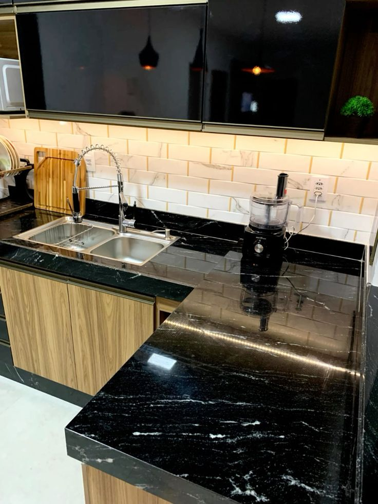
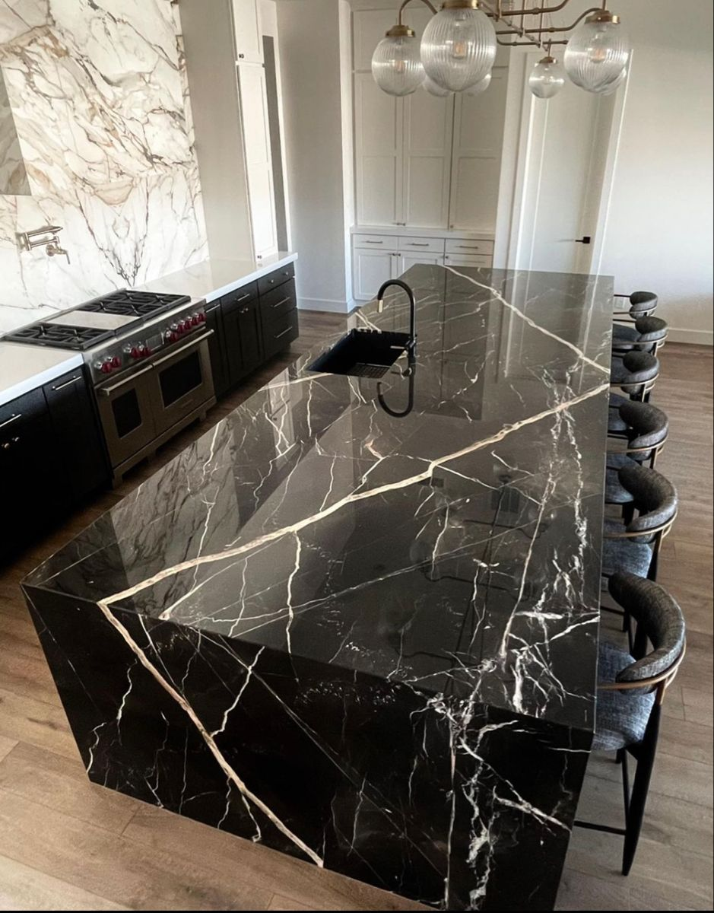
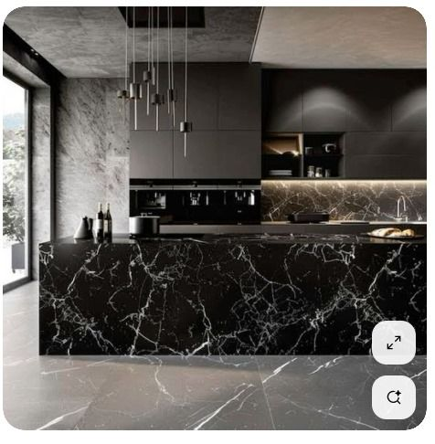
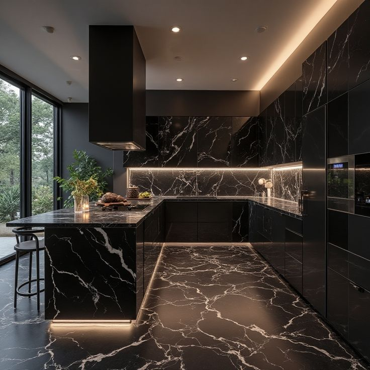
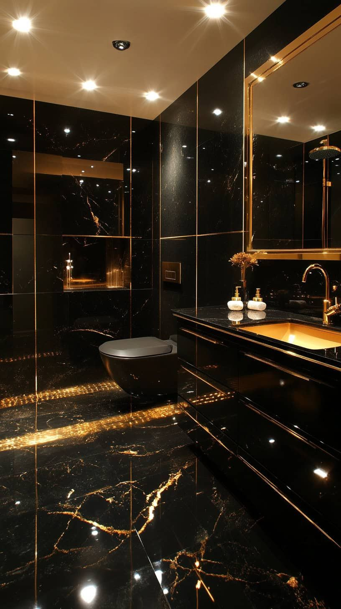

História e Elegância
A história do Granito Preto Via Láctea mistura a formação geológica da Terra com o sucesso da mineração brasileira no mercado global de rochas ornamentais.
Roca Metamórfica: Tecnicamente, ele é classificado como um gnaisse, uma rocha formada sob extrema pressão e calor no interior da Terra. Origem dos Veios: Os movimentos tectônicos injetaram quartzo e feldspato branco na massa escura de biotita, criando o desenho que lembra a nossa galáxia. Idade: Essa transformação ocorreu há centenas de milhões de anos.
Coração do Brasil: A pedra é extraída principalmente no estado do Espírito Santo, a maior região produtora e exportadora de rochas do país. Descoberta: Passou a ser explorado comercialmente no final do século XX, impulsionado pelo avanço das tecnologias de corte com teares de fio diamantado. Nome Estratégico: O nome "Via Láctea" foi uma jogada de marketing para o mercado internacional, onde ele é vendido como Milky Way Granite.
Aplicações Recomendadas
Devido à sua alta dureza, resistência física e baixíssima porosidade, o Preto Via Láctea é ideal tanto para revestimentos internos quanto externos:
- Bancadas e ilhas de cozinha de alto tráfego
- Lavatórios esculpidos de lavabo e banheiros
- Revestimentos de paredes internas, lareiras e TV
- Soleiras, rodapés e escadarias modernas
Ficha Técnica
Projetos Executados em Preto Via Láctea





Deseja este material no seu projeto?
Fale diretamente com os nossos projetistas no WhatsApp e receba um estudo de paginação e orçamento personalizado para sua obra.
Solicitar Orçamento Grátis